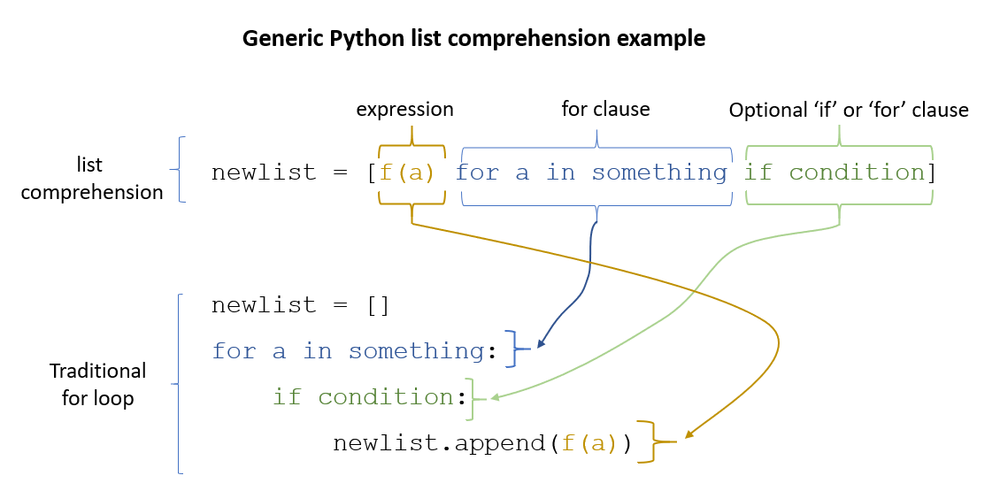
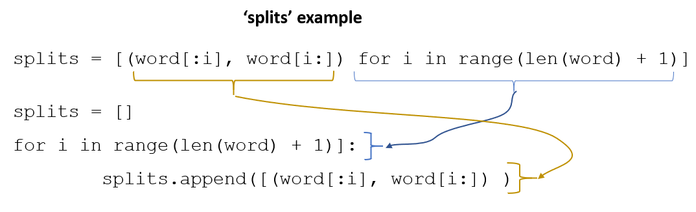
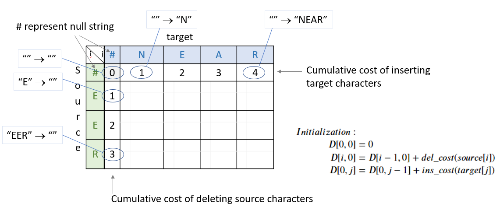
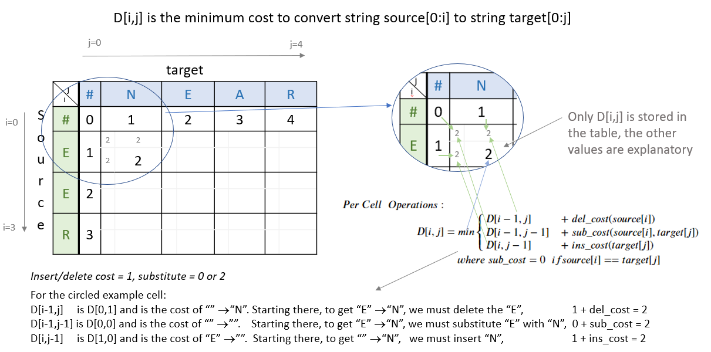
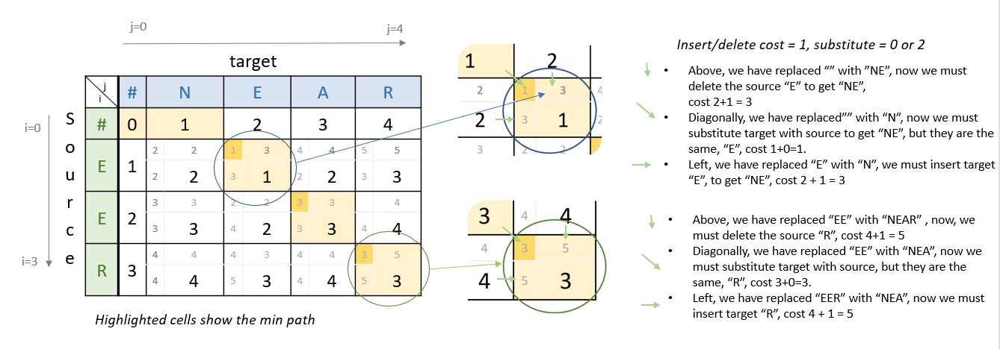

Assignment 1: Autocorrect#
Welcome to the first assignment of Course 2. This assignment will give you a chance to brush up on your python and probability skills. In doing so, you will implement an auto-correct system that is very effective and useful.
Important Note on Submission to the AutoGrader#
Before submitting your assignment to the AutoGrader, please make sure you are not doing the following:
You have not added any extra
printstatement(s) in the assignment.You have not added any extra code cell(s) in the assignment.
You have not changed any of the function parameters.
You are not using any global variables inside your graded exercises. Unless specifically instructed to do so, please refrain from it and use the local variables instead.
You are not changing the assignment code where it is not required, like creating extra variables.
If you do any of the following, you will get something like, Grader Error: Grader feedback not found (or similarly unexpected) error upon submitting your assignment. Before asking for help/debugging the errors in your assignment, check for these first. If this is the case, and you don’t remember the changes you have made, you can get a fresh copy of the assignment by following these instructions.
0 - Overview#
You use autocorrect every day on your cell phone and computer. In this assignment, you will explore what really goes on behind the scenes. Of course, the model you are about to implement is not identical to the one used in your phone, but it is still quite good.
By completing this assignment you will learn how to:
Get a word count given a corpus
Get a word probability in the corpus
Manipulate strings
Filter strings
Implement Minimum edit distance to compare strings and to help find the optimal path for the edits.
Understand how dynamic programming works
Similar systems are used everywhere.
For example, if you type in the word “I am lerningg”, chances are very high that you meant to write “learning”, as shown in Figure 1.
 Figure 1
Figure 1 0.1 - Edit Distance#
In this assignment, you will implement models that correct words that are 1 and 2 edit distances away.
We say two words are n edit distance away from each other when we need n edits to change one word into another.
An edit could consist of one of the following options:
Delete (remove a letter): ‘hat’ => ‘at, ha, ht’
Switch (swap 2 adjacent letters): ‘eta’ => ‘eat, tea,…’
Replace (change 1 letter to another): ‘jat’ => ‘hat, rat, cat, mat, …’
Insert (add a letter): ‘te’ => ‘the, ten, ate, …’
You will be using the four methods above to implement an Auto-correct.
To do so, you will need to compute probabilities that a certain word is correct given an input.
This auto-correct you are about to implement was first created by Peter Norvig in 2007.
His original article may be a useful reference for this assignment.
The goal of our spell check model is to compute the following probability:
The equation above is Bayes Rule.
Equation 1 says that the probability of a word being correct \(P(c|w) \)is equal to the probability of having a certain word \(w\), given that it is correct \(P(w|c)\), multiplied by the probability of being correct in general \(P(C)\) divided by the probability of that word \(w\) appearing \(P(w)\) in general.
To compute equation 1, you will first import a data set and then create all the probabilities that you need using that data set.
1 - Data Preprocessing#
import re
from collections import Counter
import numpy as np
import pandas as pd
import w1_unittest
As in any other machine learning task, the first thing you have to do is process your data set.
Many courses load in pre-processed data for you.
However, in the real world, when you build these NLP systems, you load the datasets and process them.
So let’s get some real world practice in pre-processing the data!
Your first task is to read in a file called ‘shakespeare.txt’ which is found in your file directory. To look at this file you can go to File ==> Open .
Exercise 1 - process_data#
Implement the function process_data which
Reads in a corpus (text file)
Changes everything to lowercase
Returns a list of words.
Options and Hints#
If you would like more of a real-life practice, don’t open the ‘Hints’ below (yet) and try searching the web to derive your answer.
If you want a little help, click on the green “General Hints” section by clicking on it with your mouse.
If you get stuck or are not getting the expected results, click on the green ‘Detailed Hints’ section to get hints for each step that you’ll take to complete this function.
General Hints
General Hints to get started
- Python input and output
- Python 're' documentation
Detailed Hints
Detailed hints if you're stuck
- Use 'with' syntax to read a file
- Decide whether to use 'read()' or 'readline(). What's the difference?
- You can use str.lower() to convert to lowercase.
- Use re.findall(pattern, string)
- Look for the "Raw String Notation" section in the Python 're' documentation to understand the difference between r'\W', r'\W' and '\\W'.
- For the pattern, decide between using '\s', '\w', '\s+' or '\w+'. What do you think are the differences?
# UNQ_C1 GRADED FUNCTION: process_data
def process_data(file_name):
"""
Input:
A file_name which is found in your current directory. You just have to read it in.
Output:
words: a list containing all the words in the corpus (text file you read) in lower case.
"""
words = [] # return this variable correctly
### START CODE HERE ###
#Open the file, read its contents into a string variable
with open(file_name, 'r', encoding='utf-8') as f:
file_contents = f.read()
# convert all letters to lower case
file_contents = file_contents.lower()
#Convert every word to lower case and return them in a list.
words = re.findall(r'\w+', file_contents)
### END CODE HERE ###
return words
Note, in the following cell, ‘words’ is converted to a python set. This eliminates any duplicate entries.
#DO NOT MODIFY THIS CELL
word_l = process_data('./data/shakespeare.txt')
vocab = set(word_l) # this will be your new vocabulary
print(f"The first ten words in the text are: \n{word_l[0:10]}")
print(f"There are {len(vocab)} unique words in the vocabulary.")
The first ten words in the text are:
['o', 'for', 'a', 'muse', 'of', 'fire', 'that', 'would', 'ascend', 'the']
There are 6116 unique words in the vocabulary.
Expected Output#
The first ten words in the text are:
['o', 'for', 'a', 'muse', 'of', 'fire', 'that', 'would', 'ascend', 'the']
There are 6116 unique words in the vocabulary.
# Test your function
w1_unittest.test_process_data(process_data)
All tests passed
Exercise 2 - get_count#
Implement a get_count function that returns a dictionary
The dictionary’s keys are words
The value for each word is the number of times that word appears in the corpus.
For example, given the following sentence: “I am happy because I am learning”, your dictionary should return the following:
| Key | Value |
| I | 2 |
| am | 2 |
| happy | 1 |
| because | 1 |
| learning | 1 |
Instructions:
Implement a get_count which returns a dictionary where the key is a word and the value is the number of times the word appears in the list.
Hints
- Try implementing this using a for loop and a regular dictionary. This may be good practice for similar coding interview questions
- You can also use defaultdict instead of a regular dictionary, along with the for loop
- Otherwise, to skip using a `for` loop, you can use Python's Counter class
# UNIT TEST COMMENT: Candidate for Table Driven Tests
# UNQ_C2 GRADED FUNCTION: get_count
def get_count(word_l):
'''
Input:
word_l: a set of words representing the corpus.
Output:
word_count_dict: The wordcount dictionary where key is the word and value is its frequency.
'''
word_count_dict = {} # fill this with word counts
### START CODE HERE
for word in word_l:
if word in word_count_dict:
word_count_dict[word] += 1
else:
word_count_dict[word] = 1
### END CODE HERE ###
return word_count_dict
#DO NOT MODIFY THIS CELL
word_count_dict = get_count(word_l)
print(f"There are {len(word_count_dict)} key values pairs")
print(f"The count for the word 'thee' is {word_count_dict.get('thee',0)}")
There are 6116 key values pairs
The count for the word 'thee' is 240
Expected Output#
There are 6116 key values pairs
The count for the word 'thee' is 240
# Test your function
w1_unittest.test_get_count(get_count, word_l)
All tests passed
Exercise 3 - get_probs#
Given the dictionary of word counts, compute the probability that each word will appear if randomly selected from the corpus of words.
where
\(C(w_i)\) is the total number of times \(w_i\) appears in the corpus.
\(M\) is the total number of words in the corpus.
For example, the probability of the word ‘am’ in the sentence ‘I am happy because I am learning’ is:
Instructions: Implement get_probs function which gives you the probability
that a word occurs in a sample. This returns a dictionary where the keys are words, and the value for each word is its probability in the corpus of words.
Hints
General advice
- Use dictionary.values()
- Use sum()
- The cardinality (number of words in the corpus should be equal to len(word_l). You will calculate this same number, but using the word count dictionary.
If you’re using a for loop:
- Use dictionary.keys()
If you’re using a dictionary comprehension:
- Use dictionary.items()
# UNQ_C3 GRADED FUNCTION: get_probs
def get_probs(word_count_dict):
'''
Input:
word_count_dict: The wordcount dictionary where key is the word and value is its frequency.
Output:
probs: A dictionary where keys are the words and the values are the probability that a word will occur.
'''
probs = {} # return this variable correctly
### START CODE HERE ###
# get the total count of words for all words in the dictionary
total_count = sum(word_count_dict.values())
# calculate probability for each word
for word, count in word_count_dict.items():
probs[word] = count / total_count
### END CODE HERE ###
return probs
#DO NOT MODIFY THIS CELL
probs = get_probs(word_count_dict)
print(f"Length of probs is {len(probs)}")
print(f"P('thee') is {probs['thee']:.4f}")
Length of probs is 6116
P('thee') is 0.0045
Expected Output#
Length of probs is 6116
P('thee') is 0.0045
# Test your function
w1_unittest.test_get_probs(get_probs, word_count_dict)
All tests passed
2 - String Manipulations#
Now that you have computed \(P(w_i)\) for all the words in the corpus, you will write a few functions to manipulate strings so that you can edit the erroneous strings and return the right spellings of the words. In this section, you will implement four functions:
delete_letter: given a word, it returns all the possible strings that have one character removed.switch_letter: given a word, it returns all the possible strings that have two adjacent letters switched.replace_letter: given a word, it returns all the possible strings that have one character replaced by another different letter.insert_letter: given a word, it returns all the possible strings that have an additional character inserted.
List comprehensions#
String and list manipulation in python will often make use of a python feature called list comprehensions. The routines below will be described as using list comprehensions, but if you would rather implement them in another way, you are free to do so as long as the result is the same. Further, the following section will provide detailed instructions on how to use list comprehensions and how to implement the desired functions. If you are a python expert, feel free to skip the python hints and move to implementing the routines directly.
Python List Comprehensions embed a looping structure inside of a list declaration, collapsing many lines of code into a single line. If you are not familiar with them, they seem slightly out of order relative to for loops.

Figure 2The diagram above shows that the components of a list comprehension are the same components you would find in a typical for loop that appends to a list, but in a different order. With that in mind, we’ll continue the specifics of this assignment. We will be very descriptive for the first function, deletes(), and less so in later functions as you become familiar with list comprehensions.
Exercise 4 - delete_letter#
Instructions for delete_letter(): Implement a delete_letter() function that, given a word, returns a list of strings with one character deleted.
For example, given the word nice, it would return the set: {‘ice’, ‘nce’, ‘nic’, ‘nie’}.
Step 1: Create a list of ‘splits’. This is all the ways you can split a word into Left and Right: For example,
‘nice is split into : [('', 'nice'), ('n', 'ice'), ('ni', 'ce'), ('nic', 'e'), ('nice', '')]
This is common to all four functions (delete, replace, switch, insert).

Figure 3Step 2: This is specific to delete_letter. Here, we are generating all words that result from deleting one character.
This can be done in a single line with a list comprehension. You can make use of this type of syntax:
[f(a,b) for a, b in splits if condition]
For our ‘nice’ example you get: [‘ice’, ‘nce’, ‘nie’, ‘nic’]
 Figure 4
Figure 4 Levels of assistance#
Try this exercise with these levels of assistance.
We hope that this will make it both a meaningful experience but also not a frustrating experience.
Start with level 1, then move onto level 2, and 3 as needed.
Level 1. Try to think this through and implement this yourself.
Level 2. Click on the “Level 2 Hints” section for some hints to get started.
Level 3. If you would prefer more guidance, please click on the “Level 3 Hints” cell for step by step instructions.
If you are still stuck, look at the images in the “list comprehensions” section above.
Level 2 Hints
Level 3 Hints
- splits: Use array slicing, like my_str[0:2], to separate a string into two pieces.
- Do this in a loop or list comprehension, so that you have a list of tuples.
- For example, "cake" can get split into "ca" and "ke". They're stored in a tuple ("ca","ke"), and the tuple is appended to a list. We'll refer to these as L and R, so the tuple is (L,R)
- When choosing the range for your loop, if you input the word "cans" and generate the tuple ('cans',''), make sure to include an if statement to check the length of that right-side string (R) in the tuple (L,R)
- deletes: Go through the list of tuples and combine the two strings together. You can use the + operator to combine two strings
- When combining the tuples, make sure that you leave out a middle character.
- Use array slicing to leave out the first character of the right substring.
# UNIT TEST COMMENT: Candidate for Table Driven Tests
# UNQ_C4 GRADED FUNCTION: deletes
def delete_letter(word, verbose=False):
'''
Input:
word: the string/word for which you will generate all possible words
in the vocabulary which have 1 missing character
Output:
delete_l: a list of all possible strings obtained by deleting 1 character from word
'''
delete_l = []
split_l = []
### START CODE HERE ###
# Create all possible splits of the word
split_l = [(word[:i], word[i:]) for i in range(len(word) + 1)]
# Create deletions by combining L + R[1:] (skip first character of right part)
delete_l = [L + R[1:] for L, R in split_l if R]
### END CODE HERE ###
if verbose: print(f"input word {word}, \nsplit_l = {split_l}, \ndelete_l = {delete_l}")
return delete_l
delete_word_l = delete_letter(word="cans",
verbose=True)
input word cans,
split_l = [('', 'cans'), ('c', 'ans'), ('ca', 'ns'), ('can', 's'), ('cans', '')],
delete_l = ['ans', 'cns', 'cas', 'can']
Expected Output#
Note: You might get a slightly different result with split_l
input word cans,
split_l = [('', 'cans'), ('c', 'ans'), ('ca', 'ns'), ('can', 's')],
delete_l = ['ans', 'cns', 'cas', 'can']
Note 1#
Notice how it has the extra tuple
('cans', '').This will be fine as long as you have checked the size of the right-side substring in tuple (L,R).
Can you explain why this will give you the same result for the list of deletion strings (delete_l)?
input word cans,
split_l = [('', 'cans'), ('c', 'ans'), ('ca', 'ns'), ('can', 's'), ('cans', '')],
delete_l = ['ans', 'cns', 'cas', 'can']
Note 2#
If you end up getting the same word as your input word, like this:
input word cans,
split_l = [('', 'cans'), ('c', 'ans'), ('ca', 'ns'), ('can', 's'), ('cans', '')],
delete_l = ['ans', 'cns', 'cas', 'can', 'cans']
Check how you set the
range.See if you check the length of the string on the right-side of the split.
# test # 2
print(f"Number of outputs of delete_letter('at') is {len(delete_letter('at'))}")
Number of outputs of delete_letter('at') is 2
Expected output#
Number of outputs of delete_letter('at') is 2
# Test your function
w1_unittest.test_delete_letter(delete_letter)
All tests passed
Exercise 5 - switch_letter#
Instructions for switch_letter(): Now implement a function that switches two letters in a word. It takes in a word and returns a list of all the possible switches of two letters that are adjacent to each other.
For example, given the word ‘eta’, it returns {‘eat’, ‘tea’}, but does not return ‘ate’.
Step 1: is the same as in delete_letter()
Step 2: A list comprehension or for loop which forms strings by swapping adjacent letters. This is of the form:
[f(L,R) for L, R in splits if condition] where ‘condition’ will test the length of R in a given iteration. See below.
 Figure 5
Figure 5 Levels of difficulty#
Try this exercise with these levels of difficulty.
Level 1. Try to think this through and implement this yourself.
Level 2. Click on the “Level 2 Hints” section for some hints to get started.
Level 3. If you would prefer more guidance, please click on the “Level 3 Hints” cell for step by step instructions.
Level 2 Hints
- Use array slicing like my_string[0:2]
- Use list comprehensions or for loops
- To do a switch, think of the whole word as divided into 4 distinct parts. Write out 'cupcakes' on a piece of paper and see how you can split it into ('cupc', 'k', 'a', 'es')
Level 3 Hints
- splits: Use array slicing, like my_str[0:2], to separate a string into two pieces.
- Splitting is the same as for delete_letter
- To perform the switch, go through the list of tuples and combine four strings together. You can use the + operator to combine strings
- The four strings will be the left substring from the split tuple, followed by the first (index 1) character of the right substring, then the zero-th character (index 0) of the right substring, and then the remaining part of the right substring.
- Unlike delete_letter, you will want to check that your right substring is at least a minimum length. To see why, review the previous hint bullet point (directly before this one).
# UNIT TEST COMMENT: Candidate for Table Driven Tests
# UNQ_C5 GRADED FUNCTION: switches
def switch_letter(word, verbose=False):
'''
Input:
word: input string
Output:
switches: a list of all possible strings with one adjacent charater switched
'''
switch_l = []
split_l = []
### START CODE HERE ###
# Create all possible splits of the word
split_l = [(word[:i], word[i:]) for i in range(len(word) + 1)]
# Create switches by swapping adjacent characters
# We need L + R[1] + R[0] + R[2:] where R has at least 2 characters
switch_l = [L + R[1] + R[0] + R[2:] for L, R in split_l if len(R) >= 2]
### END CODE HERE ###
if verbose: print(f"Input word = {word} \nsplit_l = {split_l} \nswitch_l = {switch_l}")
return switch_l
switch_word_l = switch_letter(word="eta",
verbose=True)
Input word = eta
split_l = [('', 'eta'), ('e', 'ta'), ('et', 'a'), ('eta', '')]
switch_l = ['tea', 'eat']
Expected output#
Input word = eta
split_l = [('', 'eta'), ('e', 'ta'), ('et', 'a')]
switch_l = ['tea', 'eat']
Note 1#
You may get this:
Input word = eta
split_l = [('', 'eta'), ('e', 'ta'), ('et', 'a'), ('eta', '')]
switch_l = ['tea', 'eat']
Notice how it has the extra tuple
('eta', '').This is also correct.
Can you think of why this is the case?
Note 2#
If you get an error
IndexError: string index out of range
Please see if you have checked the length of the strings when switching characters.
# test # 2
print(f"Number of outputs of switch_letter('at') is {len(switch_letter('at'))}")
Number of outputs of switch_letter('at') is 1
Expected output#
Number of outputs of switch_letter('at') is 1
# Test your function
w1_unittest.test_switch_letter(switch_letter)
All tests passed
Exercise 6 - replace_letter#
Instructions for replace_letter(): Now implement a function that takes in a word and returns a list of strings with one replaced letter from the original word.
Step 1: is the same as in delete_letter()
Step 2: A list comprehension or for loop which form strings by replacing letters. This can be of the form:
[f(a,b,c) for a, b in splits if condition for c in string] Note the use of the second for loop.
It is expected in this routine that one or more of the replacements will include the original word. For example, replacing the first letter of ‘ear’ with ‘e’ will return ‘ear’.
Step 3: Remove the original input letter from the output.
Hints
- To remove a word from a list, you may use the method .replace of a list. Note that the .remove method removes the first occurrence of an element, so you need to assure that every occurrence is removed. A while loop to check if the element is in the list may help.
- Another way is using list comprehension so you directly remove the word in the conditions.
# UNIT TEST COMMENT: Candidate for Table Driven Tests
# UNQ_C6 GRADED FUNCTION: replaces
def replace_letter(word, verbose=False):
'''
Input:
word: the input string/word
Output:
replaces: a list of all possible strings where we replaced one letter from the original word.
'''
letters = 'abcdefghijklmnopqrstuvwxyz'
replace_l = []
split_l = []
### START CODE HERE ###
# Create all possible splits of the word
split_l = [(word[:i], word[i:]) for i in range(len(word) + 1)]
# Create replacements by trying each letter at each position
for L, R in split_l:
if R: # Only if right part is not empty
for letter in letters:
new_word = L + letter + R[1:] # Replace first char of R with letter
if new_word != word: # Don't include the original word
replace_l.append(new_word)
### END CODE HERE ###
# Sort the list, for easier viewing
replace_l = sorted(replace_l)
if verbose: print(f"Input word = {word} \nsplit_l = {split_l} \nreplace_l {replace_l}")
return replace_l
replace_l = replace_letter(word='can',
verbose=True)
Input word = can
split_l = [('', 'can'), ('c', 'an'), ('ca', 'n'), ('can', '')]
replace_l ['aan', 'ban', 'caa', 'cab', 'cac', 'cad', 'cae', 'caf', 'cag', 'cah', 'cai', 'caj', 'cak', 'cal', 'cam', 'cao', 'cap', 'caq', 'car', 'cas', 'cat', 'cau', 'cav', 'caw', 'cax', 'cay', 'caz', 'cbn', 'ccn', 'cdn', 'cen', 'cfn', 'cgn', 'chn', 'cin', 'cjn', 'ckn', 'cln', 'cmn', 'cnn', 'con', 'cpn', 'cqn', 'crn', 'csn', 'ctn', 'cun', 'cvn', 'cwn', 'cxn', 'cyn', 'czn', 'dan', 'ean', 'fan', 'gan', 'han', 'ian', 'jan', 'kan', 'lan', 'man', 'nan', 'oan', 'pan', 'qan', 'ran', 'san', 'tan', 'uan', 'van', 'wan', 'xan', 'yan', 'zan']
Expected Output**:#
Input word = can
split_l = [('', 'can'), ('c', 'an'), ('ca', 'n')]
replace_l ['aan', 'ban', 'caa', 'cab', 'cac', 'cad', 'cae', 'caf', 'cag', 'cah', 'cai', 'caj', 'cak', 'cal', 'cam', 'cao', 'cap', 'caq', 'car', 'cas', 'cat', 'cau', 'cav', 'caw', 'cax', 'cay', 'caz', 'cbn', 'ccn', 'cdn', 'cen', 'cfn', 'cgn', 'chn', 'cin', 'cjn', 'ckn', 'cln', 'cmn', 'cnn', 'con', 'cpn', 'cqn', 'crn', 'csn', 'ctn', 'cun', 'cvn', 'cwn', 'cxn', 'cyn', 'czn', 'dan', 'ean', 'fan', 'gan', 'han', 'ian', 'jan', 'kan', 'lan', 'man', 'nan', 'oan', 'pan', 'qan', 'ran', 'san', 'tan', 'uan', 'van', 'wan', 'xan', 'yan', 'zan']
Note how the input word ‘can’ should not be one of the output words.
Note 1#
If you get something like this:
Input word = can
split_l = [('', 'can'), ('c', 'an'), ('ca', 'n'), ('can', '')]
replace_l ['aan', 'ban', 'caa', 'cab', 'cac', 'cad', 'cae', 'caf', 'cag', 'cah', 'cai', 'caj', 'cak', 'cal', 'cam', 'cao', 'cap', 'caq', 'car', 'cas', 'cat', 'cau', 'cav', 'caw', 'cax', 'cay', 'caz', 'cbn', 'ccn', 'cdn', 'cen', 'cfn', 'cgn', 'chn', 'cin', 'cjn', 'ckn', 'cln', 'cmn', 'cnn', 'con', 'cpn', 'cqn', 'crn', 'csn', 'ctn', 'cun', 'cvn', 'cwn', 'cxn', 'cyn', 'czn', 'dan', 'ean', 'fan', 'gan', 'han', 'ian', 'jan', 'kan', 'lan', 'man', 'nan', 'oan', 'pan', 'qan', 'ran', 'san', 'tan', 'uan', 'van', 'wan', 'xan', 'yan', 'zan']
Notice how split_l has an extra tuple
('can', ''), but the output is still the same, so this is okay.
Note 2#
If you get something like this:
Input word = can
split_l = [('', 'can'), ('c', 'an'), ('ca', 'n'), ('can', '')]
replace_l ['aan', 'ban', 'caa', 'cab', 'cac', 'cad', 'cae', 'caf', 'cag', 'cah', 'cai', 'caj', 'cak', 'cal', 'cam', 'cana', 'canb', 'canc', 'cand', 'cane', 'canf', 'cang', 'canh', 'cani', 'canj', 'cank', 'canl', 'canm', 'cann', 'cano', 'canp', 'canq', 'canr', 'cans', 'cant', 'canu', 'canv', 'canw', 'canx', 'cany', 'canz', 'cao', 'cap', 'caq', 'car', 'cas', 'cat', 'cau', 'cav', 'caw', 'cax', 'cay', 'caz', 'cbn', 'ccn', 'cdn', 'cen', 'cfn', 'cgn', 'chn', 'cin', 'cjn', 'ckn', 'cln', 'cmn', 'cnn', 'con', 'cpn', 'cqn', 'crn', 'csn', 'ctn', 'cun', 'cvn', 'cwn', 'cxn', 'cyn', 'czn', 'dan', 'ean', 'fan', 'gan', 'han', 'ian', 'jan', 'kan', 'lan', 'man', 'nan', 'oan', 'pan', 'qan', 'ran', 'san', 'tan', 'uan', 'van', 'wan', 'xan', 'yan', 'zan']
Notice how there are strings that are 1 letter longer than the original word, such as
cana.Please check for the case when there is an empty string
'', and if so, do not use that empty string when setting replace_l.
# test # 2
print(f"Number of outputs of replace_letter('at') is {len(replace_letter('at'))}")
Number of outputs of replace_letter('at') is 50
Expected output#
Number of outputs of replace_letter('at') is 50
# Test your function
w1_unittest.test_replace_letter(replace_letter)
All tests passed
Exercise 7 - insert_letter#
Instructions for insert_letter(): Now implement a function that takes in a word and returns a list with a letter inserted at every offset.
Step 1: is the same as in delete_letter()
Step 2: This can be a list comprehension of the form:
[f(a,b,c) for a, b in splits if condition for c in string]
# UNIT TEST COMMENT: Candidate for Table Driven Tests
# UNQ_C7 GRADED FUNCTION: inserts
def insert_letter(word, verbose=False):
'''
Input:
word: the input string/word
Output:
inserts: a set of all possible strings with one new letter inserted at every offset
'''
letters = 'abcdefghijklmnopqrstuvwxyz'
insert_l = []
split_l = []
### START CODE HERE ###
# Create all possible splits of the word
split_l = [(word[:i], word[i:]) for i in range(len(word) + 1)]
# Create insertions by adding each letter at each split position
for L, R in split_l:
for letter in letters:
insert_l.append(L + letter + R)
### END CODE HERE ###
if verbose: print(f"Input word {word} \nsplit_l = {split_l} \ninsert_l = {insert_l}")
return insert_l
insert_l = insert_letter('at', True)
print(f"Number of strings output by insert_letter('at') is {len(insert_l)}")
Input word at
split_l = [('', 'at'), ('a', 't'), ('at', '')]
insert_l = ['aat', 'bat', 'cat', 'dat', 'eat', 'fat', 'gat', 'hat', 'iat', 'jat', 'kat', 'lat', 'mat', 'nat', 'oat', 'pat', 'qat', 'rat', 'sat', 'tat', 'uat', 'vat', 'wat', 'xat', 'yat', 'zat', 'aat', 'abt', 'act', 'adt', 'aet', 'aft', 'agt', 'aht', 'ait', 'ajt', 'akt', 'alt', 'amt', 'ant', 'aot', 'apt', 'aqt', 'art', 'ast', 'att', 'aut', 'avt', 'awt', 'axt', 'ayt', 'azt', 'ata', 'atb', 'atc', 'atd', 'ate', 'atf', 'atg', 'ath', 'ati', 'atj', 'atk', 'atl', 'atm', 'atn', 'ato', 'atp', 'atq', 'atr', 'ats', 'att', 'atu', 'atv', 'atw', 'atx', 'aty', 'atz']
Number of strings output by insert_letter('at') is 78
Expected output#
Input word at
split_l = [('', 'at'), ('a', 't'), ('at', '')]
insert_l = ['aat', 'bat', 'cat', 'dat', 'eat', 'fat', 'gat', 'hat', 'iat', 'jat', 'kat', 'lat', 'mat', 'nat', 'oat', 'pat', 'qat', 'rat', 'sat', 'tat', 'uat', 'vat', 'wat', 'xat', 'yat', 'zat', 'aat', 'abt', 'act', 'adt', 'aet', 'aft', 'agt', 'aht', 'ait', 'ajt', 'akt', 'alt', 'amt', 'ant', 'aot', 'apt', 'aqt', 'art', 'ast', 'att', 'aut', 'avt', 'awt', 'axt', 'ayt', 'azt', 'ata', 'atb', 'atc', 'atd', 'ate', 'atf', 'atg', 'ath', 'ati', 'atj', 'atk', 'atl', 'atm', 'atn', 'ato', 'atp', 'atq', 'atr', 'ats', 'att', 'atu', 'atv', 'atw', 'atx', 'aty', 'atz']
Number of strings output by insert_letter('at') is 78
Note 1#
If you get a split_l like this:
Input word at
split_l = [('', 'at'), ('a', 't')]
insert_l = ['aat', 'bat', 'cat', 'dat', 'eat', 'fat', 'gat', 'hat', 'iat', 'jat', 'kat', 'lat', 'mat', 'nat', 'oat', 'pat', 'qat', 'rat', 'sat', 'tat', 'uat', 'vat', 'wat', 'xat', 'yat', 'zat', 'aat', 'abt', 'act', 'adt', 'aet', 'aft', 'agt', 'aht', 'ait', 'ajt', 'akt', 'alt', 'amt', 'ant', 'aot', 'apt', 'aqt', 'art', 'ast', 'att', 'aut', 'avt', 'awt', 'axt', 'ayt', 'azt']
Number of strings output by insert_letter('at') is 52
Notice that split_l is missing the extra tuple (‘at’, ‘’). For insertion, we actually WANT this tuple.
The function is not creating all the desired output strings.
Check the range that you use for the for loop.
Note 2#
If you see this:
Input word at
split_l = [('', 'at'), ('a', 't'), ('at', '')]
insert_l = ['aat', 'bat', 'cat', 'dat', 'eat', 'fat', 'gat', 'hat', 'iat', 'jat', 'kat', 'lat', 'mat', 'nat', 'oat', 'pat', 'qat', 'rat', 'sat', 'tat', 'uat', 'vat', 'wat', 'xat', 'yat', 'zat', 'aat', 'abt', 'act', 'adt', 'aet', 'aft', 'agt', 'aht', 'ait', 'ajt', 'akt', 'alt', 'amt', 'ant', 'aot', 'apt', 'aqt', 'art', 'ast', 'att', 'aut', 'avt', 'awt', 'axt', 'ayt', 'azt']
Number of strings output by insert_letter('at') is 52
Even though you may have fixed the split_l so that it contains the tuple
('at', ''), notice that you’re still missing some output strings.Notice that it’s missing strings such as ‘ata’, ‘atb’, ‘atc’ all the way to ‘atz’.
To fix this, make sure that when you set insert_l, you allow the use of the empty string
''.
# Test your function
w1_unittest.test_insert_letter(insert_letter)
All tests passed
3 - Combining the Edits#
Now that you have implemented the string manipulations, you will create two functions that, given a string, will return all the possible single and double edits on that string. These will be edit_one_letter() and edit_two_letters().
3.1 - Edit One Letter#
Exercise 8 - edit_one_letter#
Instructions: Implement the edit_one_letter function to get all the possible edits that are one edit away from a word. The edits consist of the replace, insert, delete, and optionally the switch operation. You should use the previous functions you have already implemented to complete this function. The ‘switch’ function is a less common edit function, so its use will be selected by an “allow_switches” input argument.
Note that those functions return lists while this function should return a python set. Utilizing a set eliminates any duplicate entries.
Hints
- Each of the functions returns a list. You can combine lists using the `+` operator.
- To get unique strings (avoid duplicates), you can use the set() function.
# UNIT TEST COMMENT: Candidate for Table Driven Tests
# UNQ_C8 GRADED FUNCTION: edit_one_letter
def edit_one_letter(word, allow_switches = True):
"""
Input:
word: the string/word for which we will generate all possible wordsthat are one edit away.
Output:
edit_one_set: a set of words with one possible edit. Please return a set. and not a list.
"""
edit_one_set = set()
### START CODE HERE ###
# Get all possible one-letter edits
edit_one_set.update(delete_letter(word))
edit_one_set.update(replace_letter(word))
edit_one_set.update(insert_letter(word))
if allow_switches:
edit_one_set.update(switch_letter(word))
### END CODE HERE ###
# return this as a set and not a list
return set(edit_one_set)
tmp_word = "at"
tmp_edit_one_set = edit_one_letter(tmp_word)
# turn this into a list to sort it, in order to view it
tmp_edit_one_l = sorted(list(tmp_edit_one_set))
print(f"input word {tmp_word} \nedit_one_l \n{tmp_edit_one_l}\n")
print(f"The type of the returned object should be a set {type(tmp_edit_one_set)}")
print(f"Number of outputs from edit_one_letter('at') is {len(edit_one_letter('at'))}")
input word at
edit_one_l
['a', 'aa', 'aat', 'ab', 'abt', 'ac', 'act', 'ad', 'adt', 'ae', 'aet', 'af', 'aft', 'ag', 'agt', 'ah', 'aht', 'ai', 'ait', 'aj', 'ajt', 'ak', 'akt', 'al', 'alt', 'am', 'amt', 'an', 'ant', 'ao', 'aot', 'ap', 'apt', 'aq', 'aqt', 'ar', 'art', 'as', 'ast', 'ata', 'atb', 'atc', 'atd', 'ate', 'atf', 'atg', 'ath', 'ati', 'atj', 'atk', 'atl', 'atm', 'atn', 'ato', 'atp', 'atq', 'atr', 'ats', 'att', 'atu', 'atv', 'atw', 'atx', 'aty', 'atz', 'au', 'aut', 'av', 'avt', 'aw', 'awt', 'ax', 'axt', 'ay', 'ayt', 'az', 'azt', 'bat', 'bt', 'cat', 'ct', 'dat', 'dt', 'eat', 'et', 'fat', 'ft', 'gat', 'gt', 'hat', 'ht', 'iat', 'it', 'jat', 'jt', 'kat', 'kt', 'lat', 'lt', 'mat', 'mt', 'nat', 'nt', 'oat', 'ot', 'pat', 'pt', 'qat', 'qt', 'rat', 'rt', 'sat', 'st', 't', 'ta', 'tat', 'tt', 'uat', 'ut', 'vat', 'vt', 'wat', 'wt', 'xat', 'xt', 'yat', 'yt', 'zat', 'zt']
The type of the returned object should be a set <class 'set'>
Number of outputs from edit_one_letter('at') is 129
Expected Output#
input word at
edit_one_l
['a', 'aa', 'aat', 'ab', 'abt', 'ac', 'act', 'ad', 'adt', 'ae', 'aet', 'af', 'aft', 'ag', 'agt', 'ah', 'aht', 'ai', 'ait', 'aj', 'ajt', 'ak', 'akt', 'al', 'alt', 'am', 'amt', 'an', 'ant', 'ao', 'aot', 'ap', 'apt', 'aq', 'aqt', 'ar', 'art', 'as', 'ast', 'ata', 'atb', 'atc', 'atd', 'ate', 'atf', 'atg', 'ath', 'ati', 'atj', 'atk', 'atl', 'atm', 'atn', 'ato', 'atp', 'atq', 'atr', 'ats', 'att', 'atu', 'atv', 'atw', 'atx', 'aty', 'atz', 'au', 'aut', 'av', 'avt', 'aw', 'awt', 'ax', 'axt', 'ay', 'ayt', 'az', 'azt', 'bat', 'bt', 'cat', 'ct', 'dat', 'dt', 'eat', 'et', 'fat', 'ft', 'gat', 'gt', 'hat', 'ht', 'iat', 'it', 'jat', 'jt', 'kat', 'kt', 'lat', 'lt', 'mat', 'mt', 'nat', 'nt', 'oat', 'ot', 'pat', 'pt', 'qat', 'qt', 'rat', 'rt', 'sat', 'st', 't', 'ta', 'tat', 'tt', 'uat', 'ut', 'vat', 'vt', 'wat', 'wt', 'xat', 'xt', 'yat', 'yt', 'zat', 'zt']
The type of the returned object should be a set <class 'set'>
Number of outputs from edit_one_letter('at') is 129
# Test your function
w1_unittest.test_edit_one_letter(edit_one_letter)
All tests passed
3.2 - Edit Two Letters#
Exercise 9 - edit_two_letters#
Now you can generalize this to implement to get two edits on a word. To do so, you would have to get all the possible edits on a single word and then for each modified word, you would have to modify it again.
Instructions: Implement the edit_two_letters function that returns a set of words that are two edits away. Note that creating additional edits based on the edit_one_letter function may ‘restore’ some one_edits to zero or one edits. That is allowed here. This is accounted for in get_corrections.
Hints
- You will likely want to take the union of two sets.
- You can either use set.update() or use the '|' (or operator) to union two sets
- See the documentation Python sets for examples of using operators or functions of the Python set.
# UNIT TEST COMMENT: Candidate for Table Driven Tests
# UNQ_C9 GRADED FUNCTION: edit_two_letters
def edit_two_letters(word, allow_switches = True):
'''
Input:
word: the input string/word
Output:
edit_two_set: a set of strings with all possible two edits
'''
edit_two_set = set()
### START CODE HERE ###
# Get all words that are one edit away
edit_one_set = edit_one_letter(word, allow_switches)
# For each word that is one edit away, get all words that are one edit away from it
for edited_word in edit_one_set:
edit_two_set.update(edit_one_letter(edited_word, allow_switches))
### END CODE HERE ###
# return this as a set instead of a list
return set(edit_two_set)
tmp_edit_two_set = edit_two_letters("a")
tmp_edit_two_l = sorted(list(tmp_edit_two_set))
print(f"Number of strings with edit distance of two: {len(tmp_edit_two_l)}")
print(f"First 10 strings {tmp_edit_two_l[:10]}")
print(f"Last 10 strings {tmp_edit_two_l[-10:]}")
print(f"The data type of the returned object should be a set {type(tmp_edit_two_set)}")
print(f"Number of strings that are 2 edit distances from 'at' is {len(edit_two_letters('at'))}")
Number of strings with edit distance of two: 2654
First 10 strings ['', 'a', 'aa', 'aaa', 'aab', 'aac', 'aad', 'aae', 'aaf', 'aag']
Last 10 strings ['zv', 'zva', 'zw', 'zwa', 'zx', 'zxa', 'zy', 'zya', 'zz', 'zza']
The data type of the returned object should be a set <class 'set'>
Number of strings that are 2 edit distances from 'at' is 7154
First 10 strings ['', 'a', 'aa', 'aaa', 'aab', 'aac', 'aad', 'aae', 'aaf', 'aag']
Last 10 strings ['zv', 'zva', 'zw', 'zwa', 'zx', 'zxa', 'zy', 'zya', 'zz', 'zza']
The data type of the returned object should be a set <class 'set'>
Number of strings that are 2 edit distances from 'at' is 7154
Expected Output#
Number of strings with edit distance of two: 2654
First 10 strings ['', 'a', 'aa', 'aaa', 'aab', 'aac', 'aad', 'aae', 'aaf', 'aag']
Last 10 strings ['zv', 'zva', 'zw', 'zwa', 'zx', 'zxa', 'zy', 'zya', 'zz', 'zza']
The data type of the returned object should be a set <class 'set'>
Number of strings that are 2 edit distances from 'at' is 7154
# Test your function
w1_unittest.test_edit_two_letters(edit_two_letters)
All tests passed
3.3 - Suggest Spelling Suggestions#
Now you will use your edit_two_letters function to get a set of all the possible 2 edits on your word. You will then use those strings to get the most probable word you meant to type a.k.a your typing suggestion.
Exercise 10 - get_corrections#
Instructions: Implement get_corrections, which returns a list of zero to n possible suggestion tuples of the form (word, probability_of_word).
Step 1: Generate suggestions for a supplied word: You’ll use the edit functions you have developed. The ‘suggestion algorithm’ should follow this logic:
If the word is in the vocabulary, suggest the word.
Otherwise, if there are suggestions from
edit_one_letterthat are in the vocabulary, use those.Otherwise, if there are suggestions from
edit_two_lettersthat are in the vocabulary, use those.Otherwise, suggest the input word.*
The idea is that words generated from fewer edits are more likely than words with more edits.
Note:
Edits of two letters may ‘restore’ strings to either zero or one edit. This algorithm accounts for this by preferentially selecting lower distance edits first.
Short circuit#
In Python, logical operations such as and and or have two useful properties. They can operate on lists and they have ‘short-circuit’ behavior. Try these:
# example of logical operation on lists or sets
print( [] and ["a","b"] )
print( [] or ["a","b"] )
#example of Short circuit behavior
val1 = ["Most","Likely"] or ["Less","so"] or ["least","of","all"] # selects first, does not evalute remainder
print(val1)
val2 = [] or [] or ["least","of","all"] # continues evaluation until there is a non-empty list
print(val2)
[]
['a', 'b']
['Most', 'Likely']
['least', 'of', 'all']
The logical or could be used to implement the suggestion algorithm very compactly. Alternately, if/elif/else constructs could be used.
Step 2: Create a ‘best_words’ dictionary where the ‘key’ is a suggestion and the ‘value’ is the probability of that word in your vocabulary. If the word is not in the vocabulary, assign it a probability of 0.
Step 3: Select the n best suggestions. There may be fewer than n.
Hints
- edit_one_letter and edit_two_letters return *python sets*.
- Sets have a handy set.intersection feature
- To find the keys that have the highest values in a dictionary, you can use the Counter dictionary to create a Counter object from a regular dictionary. Then you can use Counter.most_common(n) to get the n most common keys.
- To find the intersection of two sets, you can use set.intersection or the & operator.
- If you are not as familiar with short circuit syntax (as shown above), feel free to use if else statements instead.
- To use an if statement to check of a set is empty, use 'if not x:' syntax
# UNIT TEST COMMENT: Candidate for Table Driven Tests
# UNQ_C10 GRADED FUNCTION: get_corrections
def get_corrections(word, probs, vocab, n=2, verbose = False):
'''
Input:
word: a user entered string to check for suggestions
probs: a dictionary that maps each word to its probability in the corpus
vocab: a set containing all the vocabulary
n: number of possible word corrections you want returned in the dictionary
Output:
n_best: a list of tuples with the most probable n corrected words and their probabilities.
'''
suggestions = []
n_best = []
### START CODE HERE ###
#Step 1: create suggestions as described above
if word in vocab:
suggestions = [word]
else:
# Try one edit suggestions first
edit_one_suggestions = edit_one_letter(word) & vocab
if edit_one_suggestions:
suggestions = list(edit_one_suggestions)
else:
# If no one-edit suggestions, try two-edit suggestions
edit_two_suggestions = edit_two_letters(word) & vocab
suggestions = list(edit_two_suggestions)
#Step 2: determine probability of suggestions
best_words = {}
for suggestion in suggestions:
best_words[suggestion] = probs.get(suggestion, 0)
#Step 3: Get all your best words and return the most probable top n_suggested words as n_best
from collections import Counter
counter = Counter(best_words)
n_best = counter.most_common(n)
### END CODE HERE ###
if verbose: print("entered word = ", word, "\nsuggestions = ", suggestions)
return n_best
# Test your implementation - feel free to try other words in my word
my_word = 'dys'
tmp_corrections = get_corrections(my_word, probs, vocab, 2, verbose=True) # keep verbose=True
for i, word_prob in enumerate(tmp_corrections):
print(f"word {i}: {word_prob[0]}, probability {word_prob[1]:.6f}")
# CODE REVIEW COMMENT: using "tmp_corrections" insteads of "cors". "cors" is not defined
print(f"data type of corrections {type(tmp_corrections)}")
entered word = dys
suggestions = ['days', 'dye']
word 0: days, probability 0.000410
word 1: dye, probability 0.000019
data type of corrections <class 'list'>
Expected Output#
Note: This expected output is for
my_word = 'dys'. Also, keepverbose=True
entered word = dys
suggestions = {'days', 'dye'}
word 0: days, probability 0.000410
word 1: dye, probability 0.000019
data type of corrections <class 'list'>
# Test your function
w1_unittest.test_get_corrections(get_corrections, probs, vocab)
All tests passed
4 - Minimum Edit Distance#
Now that you have implemented your auto-correct, how do you evaluate the similarity between two strings? For example: ‘waht’ and ‘what’
Also how do you efficiently find the shortest path to go from the word, ‘waht’ to the word ‘what’?
You will implement a dynamic programming system that will tell you the minimum number of edits required to convert a string into another string.
4.1 - Dynamic Programming#
Dynamic Programming breaks a problem down into subproblems which can be combined to form the final solution. Here, given a string source[0..i] and a string target[0..j], we will compute all the combinations of substrings[i, j] and calculate their edit distance. To do this efficiently, we will use a table to maintain the previously computed substrings and use those to calculate larger substrings.
You have to create a matrix and update each element in the matrix as follows:
\begin{align} D[0,0] &= 0 \ D[i,0] &= D[i-1,0] + del_cost(source[i]) \tag{4}\ D[0,j] &= D[0,j-1] + ins_cost(target[j]) \ \end{align}
\begin{align} \ D[i,j] =min \begin{cases} D[i-1,j] + del_cost\ D[i,j-1] + ins_cost\ D[i-1,j-1] + \left{\begin{matrix} rep_cost; & if src[i]\neq tar[j]\ 0 ; & if src[i]=tar[j] \end{matrix}\right. \end{cases} \tag{5} \end{align}
So converting the source word play to the target word stay, using an input cost of one, a delete cost of 1, and replace cost of 2 would give you the following table:
| # | s | t | a | y | |
| # | 0 | 1 | 2 | 3 | 4 |
| p | 1 | 2 | 3 | 4 | 5 |
| l | 2 | 3 | 4 | 5 | 6 |
| a | 3 | 4 | 5 | 4 | 5 |
| y | 4 | 5 | 6 | 5 | 4 |
The operations used in this algorithm are ‘insert’, ‘delete’, and ‘replace’. These correspond to the functions that you defined earlier: insert_letter(), delete_letter() and replace_letter(). switch_letter() is not used here.
The diagram below describes how to initialize the table. Each entry in D[i,j] represents the minimum cost of converting string source[0:i] to string target[0:j]. The first column is initialized to represent the cumulative cost of deleting the source characters to convert string “EER” to “”. The first row is initialized to represent the cumulative cost of inserting the target characters to convert from “” to “NEAR”.

Figure 6 Initializing Distance MatrixFilling in the remainder of the table utilizes the ‘Per Cell Operations’ in the equation (5) above. Note, the diagram below includes in the table some of the 3 sub-calculations shown in light grey. Only ‘min’ of those operations is stored in the table in the min_edit_distance() function.

Figure 7 Filling Distance MatrixNote that the formula for \(D[i,j]\) shown in the image is equivalent to:
\begin{align} \ D[i,j] =min \begin{cases} D[i-1,j] + del_cost\ D[i,j-1] + ins_cost\ D[i-1,j-1] + \left{\begin{matrix} rep_cost; & if src[i]\neq tar[j]\ 0 ; & if src[i]=tar[j] \end{matrix}\right. \end{cases} \tag{5} \end{align}
The variable sub_cost (for substitution cost) is the same as rep_cost; replacement cost. We will stick with the term “replace” whenever possible.
Below are some examples of cells where replacement is used. This also shows the minimum path from the lower right final position where “EER” has been replaced by “NEAR” back to the start. This provides a starting point for the optional ‘backtrace’ algorithm below.

Figure 8 Examples Distance MatrixExercise 11 - min_edit_distance#
Again, the word “substitution” appears in the figure, but think of this as “replacement”.
Instructions: Implement the function below to get the minimum amount of edits required given a source string and a target string.
Hints
- The range(start, stop, step) function excludes 'stop' from its output
- words
# UNQ_C11 GRADED FUNCTION: min_edit_distance
def min_edit_distance(source, target, ins_cost = 1, del_cost = 1, rep_cost = 2):
'''
Input:
source: a string corresponding to the string you are starting with
target: a string corresponding to the string you want to end with
ins_cost: an integer setting the insert cost
del_cost: an integer setting the delete cost
rep_cost: an integer setting the replace cost
Output:
D: a matrix of len(source)+1 by len(target)+1 containing minimum edit distances
med: the minimum edit distance (med) required to convert the source string to the target
'''
# use deletion and insert cost as 1
m = len(source)
n = len(target)
#initialize cost matrix with zeros and dimensions (m+1,n+1)
D = np.zeros((m+1, n+1), dtype=int)
### START CODE HERE (Replace instances of 'None' with your code) ###
# Fill in column 0, from row 1 to row m, both inclusive
for row in range(1, m + 1): # Replace None with the proper range
D[row,0] = D[row-1,0] + del_cost
# Fill in row 0, for all columns from 1 to n, both inclusive
for col in range(1, n + 1): # Replace None with the proper range
D[0,col] = D[0,col-1] + ins_cost
# Loop through row 1 to row m, both inclusive
for row in range(1, m + 1):
# Loop through column 1 to column n, both inclusive
for col in range(1, n + 1):
# Intialize r_cost to the 'replace' cost that is passed into this function
r_cost = rep_cost
# Check to see if source character at the previous row
# matches the target character at the previous column,
if source[row-1] == target[col-1]: # Replace None with a proper comparison
# Update the replacement cost to 0 if source and target are the same
r_cost = 0
# Update the cost at row, col based on previous entries in the cost matrix
# Refer to the equation calculate for D[i,j] (the minimum of three calculated costs)
D[row,col] = min(D[row-1,col] + del_cost, # deletion
D[row,col-1] + ins_cost, # insertion
D[row-1,col-1] + r_cost) # replacement
# Set the minimum edit distance with the cost found at row m, column n
med = D[m,n]
### END CODE HERE ###
return D, med
#DO NOT MODIFY THIS CELL
# testing your implementation
source = 'play'
target = 'stay'
matrix, min_edits = min_edit_distance(source, target)
print("minimum edits: ",min_edits, "\n")
idx = list('#' + source)
cols = list('#' + target)
df = pd.DataFrame(matrix, index=idx, columns= cols)
print(df)
minimum edits: 4
# s t a y
# 0 1 2 3 4
p 1 2 3 4 5
l 2 3 4 5 6
a 3 4 5 4 5
y 4 5 6 5 4
Expected Results:
minimum edits: 4
# s t a y
# 0 1 2 3 4
p 1 2 3 4 5
l 2 3 4 5 6
a 3 4 5 4 5
y 4 5 6 5 4
#DO NOT MODIFY THIS CELL
# testing your implementation
source = 'eer'
target = 'near'
matrix, min_edits = min_edit_distance(source, target)
print("minimum edits: ",min_edits, "\n")
idx = list(source)
idx.insert(0, '#')
cols = list(target)
cols.insert(0, '#')
df = pd.DataFrame(matrix, index=idx, columns= cols)
print(df)
minimum edits: 3
# n e a r
# 0 1 2 3 4
e 1 2 1 2 3
e 2 3 2 3 4
r 3 4 3 4 3
Expected Results
minimum edits: 3
# n e a r
# 0 1 2 3 4
e 1 2 1 2 3
e 2 3 2 3 4
r 3 4 3 4 3
# Test your function
w1_unittest.test_min_edit_distance(min_edit_distance)
All tests passed
We can now test several of our routines at once:
source = "eer"
targets = edit_one_letter(source,allow_switches = False) #disable switches since min_edit_distance does not include them
for t in targets:
_, min_edits = min_edit_distance(source, t,1,1,1) # set ins, del, sub costs all to one
if min_edits != 1: print(source, t, min_edits)
Expected Results
(empty)
The ‘replace()’ routine utilizes all letters a-z one of which returns the original word.
source = "eer"
targets = edit_two_letters(source,allow_switches = False) #disable switches since min_edit_distance does not include them
for t in targets:
_, min_edits = min_edit_distance(source, t,1,1,1) # set ins, del, sub costs all to one
if min_edits != 2 and min_edits != 1: print(source, t, min_edits)
eer eer 0
Expected Results
eer eer 0
We have to allow single edits here because some two_edits will restore a single edit.
Submission#
Make sure you submit your assignment before you modify anything below
5 - Backtrace (Optional)#
Once you have computed your matrix using minimum edit distance, how would find the shortest path from the top left corner to the bottom right corner?
Note that you could use backtrace algorithm. Try to find the shortest path given the matrix that your min_edit_distance function returned.
You can use these lecture slides on minimum edit distance by Dan Jurafsky to learn about the algorithm for backtrace.
# Experiment with back trace - insert your code here
References#
Dan Jurafsky - Speech and Language Processing - Textbook
This auto-correct explanation was first done by Peter Norvig in 2007